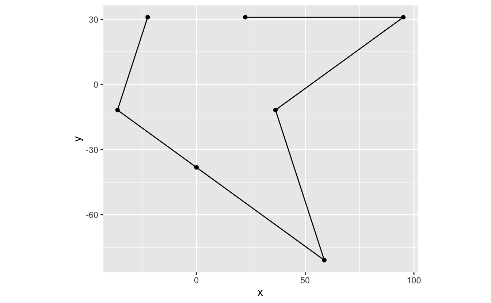
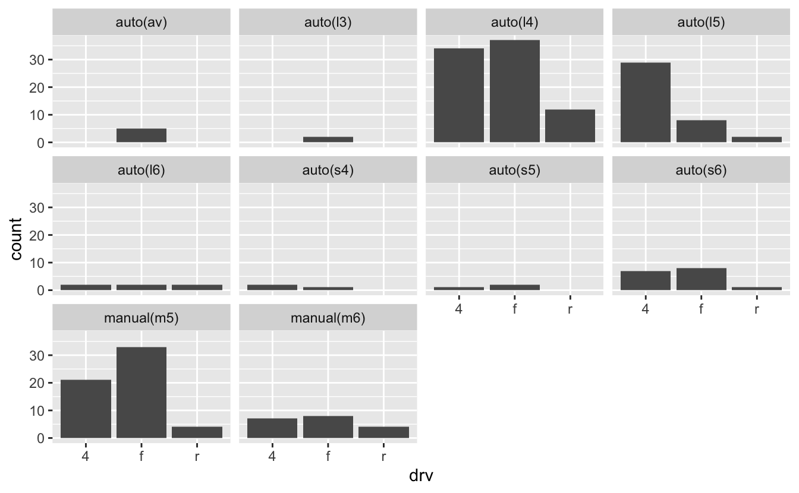

2 Discrete-continuous relationships
2.1 Introduction
In this chapter, we’ll use the tidyverse package and data from the dcldata package.
library(tidyverse)
library(dcldata)Before reading this chapter, take a look at the following sections from the Data Visualization with ggplot2 cheat sheet.
- Coordinate systems
- Geoms:
geom_col(),geom_bar(), andgeom_point()
You’ll often want to visualize the number or amount of something across different categories. For example, you might be interested in the the number of sheep that reside in each U.S. state, the milligrams of caffeine in different coffee drinks, or the gross income of films.
We’ll call this class of visualizations discrete-continuous because they involve plotting a continuous variable against a discrete one. In the above examples, the states, coffee drinks, and films are the discrete variables. The associated numbers of sheep, milligrams of caffeine, and gross income are the continuous variables.
You might argue that number of sheep is not a continuous variable, as you can’t really have a fractional sheep. However, ggplot2 treats integers and doubles as continuous variables, and treats only factors, characters, and logicals as discrete.
For example, in the tibble x, count is an integer variable (the Ls create integers).
x <-
tibble(
category = c("a", "b"),
count = c(1L, 2L)
)
x
#> # A tibble: 2 x 2
#> category count
#> <chr> <int>
#> 1 a 1
#> 2 b 2However, ggplot creates a continuous scale for count.
x %>%
ggplot(mapping = aes(x = category, y = count)) +
geom_col()As you’ll see later, it’s useful to understand how ggplot2 treats different types of variables.
In this chapter, you’ll first learn about the mechanics of coordinate systems in ggplot2. Sometimes, you’ll want to change the default settings of a coordinate system to create a more effective visualization. You’ll need these mechanics in the “wisdom” section of the reading, where you’ll learn about common visualization strategies for discrete-continuous relationships.
2.2 Coordinate systems
Every ggplot2 plot has a coordinate system. ggplot2’s default coordinate system is the Cartesian coordinate system, which is used in the following plot.
mpg %>%
ggplot(mapping = aes(x = displ, y = hwy)) +
geom_point() 
This plot is the same as the following, since ggplot() implicitly calls coord_cartesian().
mpg %>%
ggplot(mapping = aes(x = displ, y = hwy)) +
geom_point() +
coord_cartesian()
Much of the time, you won’t need to think about the coordinate system. However, as you’ll see below, you’ll sometimes want to change its default settings.
2.2.1 coord_fixed()
Consider the following plot.
r <- rep_len(c(100 , 100 * sin(pi / 10) / cos(pi / 5)), length.out = 11)
star <-
tibble(
x = r * sin(seq(0, 2 * pi, length.out = 11)),
y = r * cos(seq(0, 2 * pi, length.out = 11))
)
star %>%
ggplot(mapping = aes(x = x, y = y)) +
geom_path() +
geom_point()By default, coord_cartesian() fills the space available for plotting. This space is wider than it is tall, which causes the space between 0 and 50 on the x-axis to be longer than the space between 0 and 50 on the y-axis, distorting the star.
To override the default aspect ratio, you can use coord_fixed(). coord_fixed() contains a ratio argument that allows you to specify an aspect ratio. By default, ratio is 1, which creates a square plot.
star %>%
ggplot(mapping = aes(x = x, y = y)) +
geom_path() +
geom_point() +
coord_fixed()2.2.2 Zooming
Say you want to get a closer look at the lower portion of the star. coord_cartesian() and coord_fixed() both contain the arguments xlim and ylim that allow you to zoom in or out of your plot, controlling the bounds of what’s visible.
Here, we’ll set the boundaries so that only points with y less than or equal to 50 and x greater than or equal to -50 are visible.
star %>%
ggplot(mapping = aes(x = x, y = y)) +
geom_path() +
geom_point() +
coord_fixed(xlim = c(-50, 100), ylim = c(-85, 50))Note that zooming is not the same as removing values and then plotting. The following plot is the result of first removing all values outside the bounds and then plotting.
star %>%
filter(x >= -50, y <= 50) %>%
ggplot(mapping = aes(x = x, y = y)) +
geom_path() +
geom_point() +
coord_fixed()
The above plot no longer looks like a star. Instead of just zooming in, we’ve changed what’s plotted. Therefore, to zoom, we recommend using the xlim and ylim arguments of coord_cartesian() and coord_fixed() instead of other methods that delete data before plotting.
2.3 One discrete category
In this section, we’ll use data collected by the American Community Survey (ACS) on languages spoken at home across the U.S. dcldata::languages_states contains data from the 2013 ACS on the number of at-home speakers of non-English speakers by state.
We’ve filtered languages_states to focus on the top 20 languages spoken in Utah, besides English and Spanish. We’ll use this tibble, utah_languages, for the rest of the chapter.
utah_languages <-
languages_states %>%
filter(state == "Utah", language != "Spanish") %>%
slice_max(speakers, n = 20)
utah_languages
#> # A tibble: 20 x 3
#> state language speakers
#> <chr> <chr> <int>
#> 1 Utah German 9025
#> 2 Utah Navajo 8193
#> 3 Utah Chinese 7625
#> 4 Utah Portuguese 7150
#> 5 Utah French 6645
#> 6 Utah Vietnamese 6355
#> # … with 14 more rowsutah_languages contains one discrete variable (language) and one continuous variable (speakers). In the next section, we’ll visualize the number of speakers of each language, a discrete-continuous relationship.
Before we get started with these visualizations, however, here are two general goals of visualizing discrete-continuous relationships. We’ll use these goals to evaluate the various plots we make in the next section.
A discrete-continuous visualization should make it easy to:
- Connect categories with their associated numbers (e.g., German to the number of German speakers)
- Compare numbers to each other (e.g., the number of German speakers to the number of Navajo speakers)
Keep in mind that the visualization strategies we discuss aren’t the final word on visualizations for discrete-continuous relationships. There are many other ways not discussed here that you might find useful and you should therefore treat these strategies only as a starting point.
2.3.1 Effective bar plots
To visualize the number of speakers of each language in utah_languages we can use geom_col() to create a bar plot.
utah_languages %>%
ggplot(mapping = aes(x = language, y = speakers)) +
geom_col() +
stamp("Bad")We can evaluate this visualization by determining if it meets the two goals outlined earlier.
First, does this visualization make it easy to connect categories to their associated numbers? No. The overlapping x-axis labels make it really difficult to connect categories (languages) to numbers (speakers) because the labels on the x-axis overlap.
Second, does this visualization make it easy to compare numbers to each other? Again, no. Try to compare the bar furthest to the right (Vietnamese) with the bar 4th from the left (French). It takes a bit of back-and-forth eye motion to determine which is longer. Now try to figure out which bar is the shortest. It’s not immediately obvious, but it should be.
Luckily, we can easily solve these two problems. First, to correct the labeling issue, we can switch the order of the variables in aes(), placing the language labels on the y-axis.
utah_languages %>%
ggplot(mapping = aes(x = speakers, y = language)) +
geom_col() +
stamp("Bad")
It’s now effortless to connect a bar with a label.
Comparing numbers of speakers across languages, however, is still difficult. We can make these comparisons much easier by ordering the languages by number of speakers.
utah_languages
#> # A tibble: 20 x 3
#> state language speakers
#> <chr> <chr> <int>
#> 1 Utah German 9025
#> 2 Utah Navajo 8193
#> 3 Utah Chinese 7625
#> 4 Utah Portuguese 7150
#> 5 Utah French 6645
#> 6 Utah Vietnamese 6355
#> # … with 14 more rowsNotice that the languages in utah_languages appear in order of descending speakers, but, in the plot, they appear in alphabetical order. ggplot2 plots character variables in alphabetical order from bottom to top, disregarding row order. You have to change a character variable to a factor if you want ggplot2 to plot the variable in an order other than alphabetical.
A factor is a categorical variable with a fixed number of values, called levels. If you want to read more about factors, see the Factors chapter from R4DS.
To order language by number of speakers, we’ll first turn language into a factor with levels ordered by number of speakers. The function fct_reorder() can do this for us.
df <-
utah_languages %>%
mutate(language = fct_reorder(language, speakers))
df
#> # A tibble: 20 x 3
#> state language speakers
#> <chr> <fct> <int>
#> 1 Utah German 9025
#> 2 Utah Navajo 8193
#> 3 Utah Chinese 7625
#> 4 Utah Portuguese 7150
#> 5 Utah French 6645
#> 6 Utah Vietnamese 6355
#> # … with 14 more rows
levels(df$language) %>% head()
#> [1] "Laotian" "Dutch" "Mon-Khmer, Cambodian"
#> [4] "Nepali" "Mandarin" "Arabic"fct_reorder() has changed language from a character vector to a factor. The levels of the factor are just the languages themselves in the order of increasing number of speakers (Laotian has the fewest speakers).
Note that, by default, fct_reorder() uses the median of the second variable to reorder the first. In the current example, there’s only one value of speakers for each value of language, so the median of each value is the same as that value.
Now, ggplot() will use the factor levels to order the plot.
utah_languages %>%
mutate(language = fct_reorder(language, speakers)) %>%
ggplot(mapping = aes(x = speakers, y = language)) +
geom_col()Now, it’s obvious which of the languages has the most speakers and which has the fewest. Try comparing Vietnamese with French again. French now clearly has more speakers. You don’t need to move your eyes back and forth several times to determine which value is greater, and you can easily estimate the magnitude of differences between adjacent categories. It’s now also obvious that Laotian has the fewest speakers.
Reordering a character variable before plotting is almost always a good idea. You’ll rarely want to plot in alphabetical order. Typically, you’ll want to reorder according to the amount plotted on the other axis. Sometimes, however, you’ll want to match an intrinsic ordering of the variables, such as the clarity variable in diamonds, which is an ordered factor.
2.3.2 geom_bar()
In the previous section, we used geom_col() to plot number of speakers versus language. geom_col() takes two variables: one to map to the x-axis and one to map to the y-axis. Sometimes, however, the amounts you wish to plot will be implicit in the data.
For example, say you want to determine the number of cars with each drivetrain type in the mpg data set. Each row in mpg represents a single car, so we can use geom_bar() to visualize the number of cars with each drivetrain.
mpg %>%
ggplot(mapping = aes(x = drv)) +
geom_bar()
Unlike geom_col(), geom_bar() takes only the x aesthetic. The y-value is the count of items in each x category. geom_bar() is therefore like a special case of the more general geom_col().
If you want to order a variable like drv by count, the function fct_infreq() is useful. Like fct_reorder(), fct_infreq() creates an ordered factor. However, instead of ordering the levels by another variable, fct_infreq() orders them by the number of times each value appears in the data.
mpg %>%
mutate(drv = fct_infreq(drv)) %>%
ggplot(mapping = aes(x = drv)) +
geom_bar() 
The bars now appear in order of count, from highest to lowest. Sometimes, you’ll want the bars to appear from low to high. To change the order, we’ll have to use another function, fct_rev(), after fct_infreq(). fct_rev() reverses factor levels.
mpg %>%
mutate(drv = fct_infreq(drv) %>% fct_rev()) %>%
ggplot(mapping = aes(x = drv)) +
geom_bar() 2.3.3 Bars vs. dots
We could have used geom_point() to visualize the language use data.
utah_languages %>%
mutate(language = fct_reorder(language, speakers)) %>%
ggplot(mapping = aes(x = speakers, y = language)) +
geom_point()This plot is pretty similar to our bar plot from earlier. They are both pretty clear, and both meet our two goals. However, notice that the x-axis of this geom_point() plot starts around 1250, while the x-axis of our bar plot began at 0.
ggplot2 requires that the numerical axis of a bar plots starts at 0. To demonstrate the rationale behind this requirement, consider the tibble x. In x, “c” is twice “b” and “b” is twice “a.” The bar plot below accurately portrays these relationships.
x <-
tibble(
category = c("a", "b", "c"),
amount = c(2, 4, 8)
)
x %>%
ggplot(mapping = aes(x = category, y = amount)) +
geom_col()However, imagine if the y-axis started at 1, marked by the red line.
x %>%
ggplot(mapping = aes(x = category, y = amount)) +
geom_col() +
geom_hline(yintercept = 1, color = "red", size = 1)“a”’s bar would have length 1, but “b”’s would have length 3. The 1:2 relationships between the variables would be lost.
When you estimate values in bar plots, you judge and compare the lengths of the bars. These lengths must therefore accurately encode the values. They can only do so if the axis starts at 0.
geom_point(), however, encodes values with position. The relative positions of the dots will accurately encode the data no matter where the axis begins. Therefore, it’s okay for geom_point() to start the axis at a value other than 0.
The choice between points and bars is largely a choice between comparing values to 0 or comparing values to each other.
For example, the following plot shows the times from the men’s 100 meter final in the 2016 Olympics. The times are all very close together, and the bars fill up most of the plot.
example_sprint %>%
mutate(name = fct_reorder(name, -time)) %>%
ggplot(mapping = aes(x = time, y = name)) +
geom_col() +
stamp("Bad")
The main conclusion you can take away from this plot is that all the sprinters ran the race in around 10 seconds. If you knew nothing about sprinting, the 2016 Olympics, or Usain Bolt, however, this information is largely useless. Is 10 seconds slow or fast?
In the Visual Display of Quantitative Information, Edward Tufte gives the following directive:
To be truthful and revealing, data graphics must bear on the question at the heart of quantitative thinking: “Compared to what?” (Tufte 2001, 74)
“Compared to what?” is a useful question to ask yourself when creating visualizations. Our bar plot above seems to say the important comparison is between the race times and 0. However, the interesting time comparisons aren’t to 0, but among the runners. geom_point() allows us to highlight these comparisons.
example_sprint %>%
mutate(name = fct_reorder(name, -time)) %>%
ggplot(mapping = aes(x = time, y = name)) +
geom_point()
We now get a much better sense of the race. There’s a couple runners in the back, then a pack in the middle, and then Bolt way out ahead. This narrative is hidden in the bar plot.
2.4 Two discrete categories
2.4.1 Color and facets
Previously, we visualized continuous amounts in a single discrete category. In the language plot, language was the single discrete category. In the race plot, name was the single discrete category. Often, however, your data will contain multiple categories, and you’ll want to visualize all these categories at once.
For example, earlier we visualized the number of cars in each drivetrain category. What if we want to add year to our plot? One option is to encode year using a fill color.
mpg %>%
ggplot(mapping = aes(x = drv, fill = year)) +
geom_bar() 
fill = year didn’t do anything. What happened? Recall from earlier that ggplot treats integers as continuous variables. The “fill” aesthetic of bar plots, however, must be a discrete variable. To fix this problem, we’ll turn year into a factor.
mpg %>%
mutate(year = as.factor(year)) %>%
ggplot(mapping = aes(x = drv, fill = year)) +
geom_bar() +
stamp("Bad")This is a “stacked” bar plot. Stacked bar plots are rarely a good idea. It’s pretty easy to understand the relationship between count and drivetrain for cars from 2008 (the blue bars). However, some visual arithmetic is required to compare the 1999 bars because they start at different points along the y-axis. Any more values in year would only exacerbate this problem.
Luckily, geom_bar() and geom_col() both take a position argument that controls the position of the different colored bars. Setting position = "dodge" greatly improves the plot.
mpg %>%
mutate(year = as.factor(year)) %>%
ggplot(mapping = aes(x = drv, fill = year)) +
geom_bar(position = "dodge")Notice that it’s now much easier to compare the red bars to each other and to compare the red and blue bars, as they now all begin at 0.
year is a pretty simple variable. It contains only two values. What if we wanted to encode a variable with more values? For example, trans contains 10 different values.
mpg %>%
ggplot(mapping = aes(x = drv, fill = trans)) +
geom_bar(position = "dodge") +
stamp("Bad")Recall our goals from the beginning of this chapter. The first goal states that it should be easy to connect categories with numbers. Two variables now define each category. It’s pretty easy to connect drv to a number of cars. However, it’s difficult to connect trans with those numbers. There are so many different colors that it’s hard to remember which color refers to which transmission type.
The second goal states that it should be easy to compare numbers. Comparing bars within a single drv value is easy. However, it’s harder to compare bars of the same trans value. Try to compare all the dark green (“auto(I5)”) bars. Notice that it takes some visual construction work to pull out all the dark green bars and compare them to each other. Therefore, it’s generally not a good idea to create a dodged bar plot if the variable encoded by the fill color has more than 2 values. Faceting can be a better option.
mpg %>%
ggplot(mapping = aes(x = drv)) +
geom_bar() +
facet_wrap(vars(trans))
When faceting, notice that it’s much easier to compare values in a single facet than it is to compare values across facets. Therefore, think about the goals of your plot when choosing which variable to facet by and which to plot on the axis. If you want to highlight how drivetrain numbers vary within a single transmission class, the above plot works well. However, if you want to instead highlight how transmission numbers vary within a single drivetrain, facet by drivetrain and put transmission on the axis.
mpg %>%
ggplot(aes(trans)) +
geom_bar() +
facet_grid(rows = vars(drv))This plot has some additional advantages over the previous faceted plot. First, it’s generally a good idea to put the variable with more values on the x-axis, and facet by the variable with fewer values. As we said above, it’s easier to compare values in a single facet than it is to compare values across facets.
Second, because there are fewer facets, we can use facet_grid() to align the facets vertically. This vertical alignment makes it easier to compare the distributions of values because of all facets now share a common x-axis.